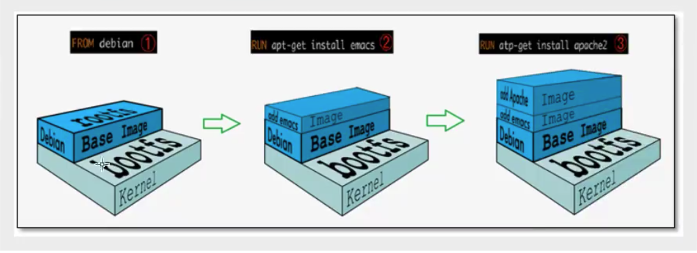
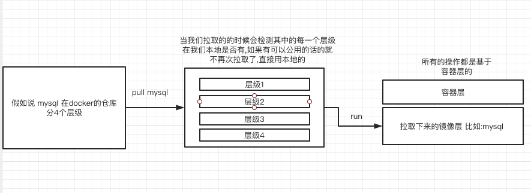

镜像是什么
镜像是一种轻量级, 可执行的独立的软件包, 用来打包软件运行环境和基于运行环境开发的软件, 它包含运行某个软件所需要的内容 比如: 代码, 环境, 库, 配置文件等, 所有的应用, 直接打包docker镜像 就可以直接跑起来.
Docker镜像加载原理
UnionFS(联合文件系统)
UnionFS(联合文件系统) 是一种分层,轻量级并且高性能的文件系统, 它支持对文件系统的修改作为一次提交来一层层的叠加, 同时可以将不同目录挂载到同一个虚拟文件系统下. UnionFS文件系统是 Docker 镜像的基础. 镜像可以通过分层来进行继承, 基于基础镜像(没有父镜像, 可以制作各种具体的应用镜像).
特性: 一次同时加载多个文件系统, 但从外面看起来, 只能看到一个文件系统, 联合加载会把各层文件系统叠加起来, 这样最终的文件系统会包含所有底层的文件和目录
Docker镜像加载原理
docker的镜像实际上由一层一层的文件系统组成, 这种层级的文件系统UnionFS.
bootfs(boot file system)主要包含bootloader和kernel, bootloader主要是引导加载kernel, Linux刚启动时会加载bootfs文件系统, 在Docker镜像的最底层是bootfs. 这一层与我们典型的Linux/Unix系统是一样的, 包含boot加载器和内核. 当boot加载完成之后整个内核就都在内存中了, 此时内存的使用权已由bootfs转交给内核, 此时系统也会卸载bootfs.
rootfs(root file system), 在bootfs之上. 包含的就是典型 Linux 系统中的 /dev, /proc, /bin, /etc 等标准目录和文件. rootfs就是各种不同的操作系统发行版, 比如Ubuntu, Centos等等.
理解
- 一个linux系统按启动顺序可以划分为: 引导加载, 内核, 文件系统, 应用程序.
- 系统启动都需要引导加载也就是 bootloader和kernel, 系统运行起来之后就不需要bootfs, 也就会把它卸载掉
- 对于Docker安装OS来说Docker使用了Linux本身的bootfs, 只需要安装自己所需的rootfs

分层理解
- Docker安装普通镜像来说 Docker本身是分层下载镜像, 所以可以提取出公共层镜像进行复用.
